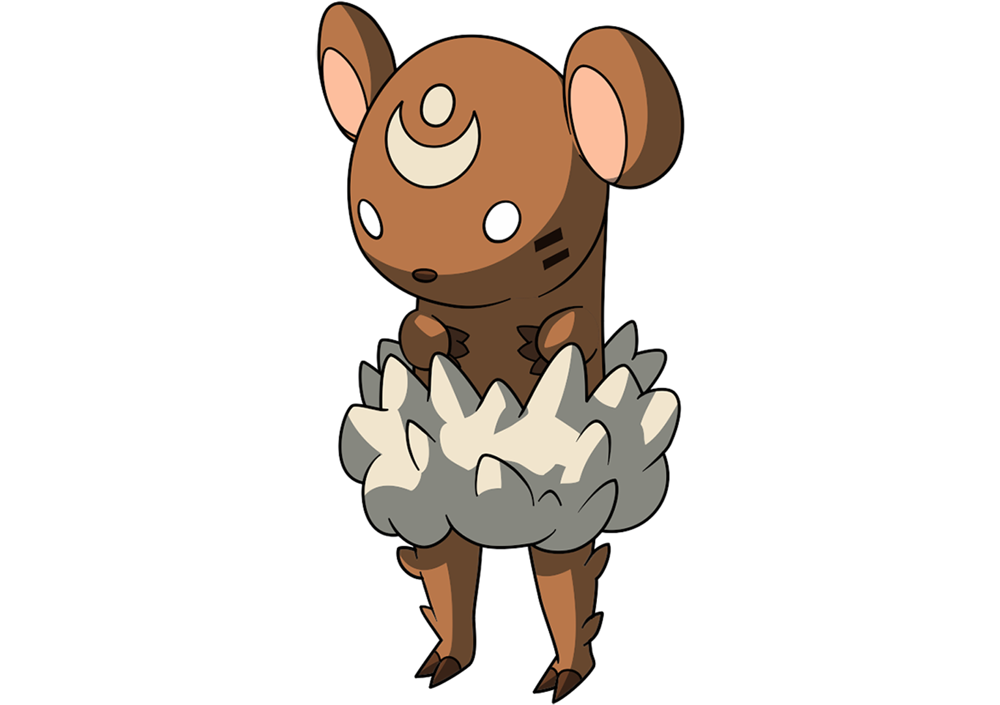
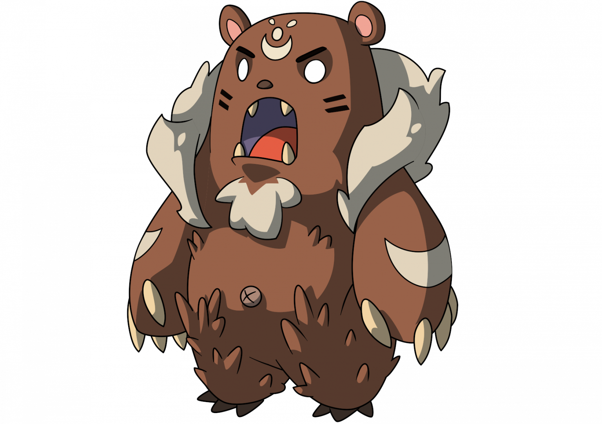

Green Pear
Banana
Green Pear
Banana
 Cream Puff
Cream Puff
Normal
A small cuddly Nexomon enveloped in fluffy fur that helps it keep balanced on its tiny legs.
Food:
Green Pear
Banana
Cream Puff
Cloddy lvl 13-> Cubdy lvl 30-> Lukuma
Stats:
Learnset:
| Level | Move | Type | Pow | Acc | Cost | Spd | Crit% | Desc. |
|---|---|---|---|---|---|---|---|---|
| 1 | Scratch | Normal | 40 | 95 | 5 | 55 | 10 | Deals physical damage with high accuracy. |
| 7 | Sandstorm | Mineral | 65 | 85 | 10 | 15 | 15 | Deals mineral-type damage with a 30% chance to inflict confuse. |
| 10 | Battle Roar | Normal | 0 | 30 | 10 | 67 | 0 | Has a 30% chance to inflict demotivated. |
| 16 | Recover | Normal | 0 | 100 | 5 | 10 | 0 | Grants Recovery, restoring 8% of this Nexomon's maximum HP every turn. |
| 18 | Plasma | Normal | 60 | 85 | 5 | 56 | 10 | Deals physical damage. |